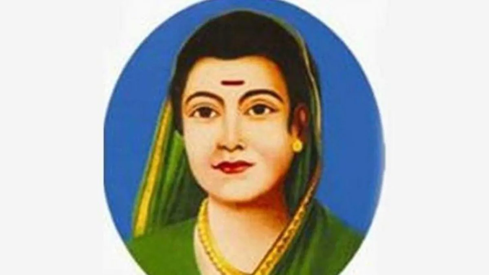

Savitribai Phule (3 January 1831 – 10 March 1897) was an Indian social reformer,
educationalist, and poet from Maharashtra. She is regarded as the first female teacher of
India. Along with her husband, Jyotirao Phule, she played an important role in improving women's
rights in India. She is regarded as the mother of Indian feminism. Phule and her husband
founded one of the first Indian girls' school in Pune, at Bhide wada in 1848. She worked to
abolish the discrimination and unfair treatment of people based on caste and gender. She is regarded as an
important figure of the social reform movement in Maharashtra. A
philanthropist and an
educationist, Phule was also a prolific Marathi writer.
10 Things you didn't know about Savitribai Phule
Savitribai Phule was born on 3 January 1831 in the village of Naigaon in Satara
District, Maharashtra.
Savitribai's birthdate, i.e. 3 January, is celebrated as Balika Din in the whole of
Maharashtra, especially in Girl's Schools.
At the time of her marriage Savitribai was not educated. Jyotirao educated Savitribai at their home.
She also enrolled in two teacher's training programs.
The first was at institution run by an American missionary, Cynthia Farrar, in Ahmednagar.
The second course was at a Normal School in Pune.
Given her training, Savitribai may have been the first Indian woman teacher and headmistress.
She started their (Sagunabai, Savitribai, Jyotirao) own school at Bhide Wada. The curriculum at
Bhide Wada included traditional western curriculum of mathematics, science, and social studies.
By the end of 1851, Savitribai and Jyotirao Phule were running three different schools
for girls in Pune.
Savitribai and her adopted son, Yashwant, opened a clinic to treat those affected by the worldwide
Third Pandemic of the bubonic plague when it appeared in the area around
Nalasopara in 1897.
Savitribai Phule was also a prolific author and poet. Some of her works are:-
Kavya Phule in 1854
Bavan Kashi Subodh Ratnakar in 1892
"Go, Get Education"
She opened a women's shelter called the Home for the Prevention of
Infanticide, where Brahmin widows could safely deliver their children and leave them
there to be adopted if they so desired.
She also campaigned against child marriage and was a advocate of widow remarriage. She srtongly opposed
Sati Prabha